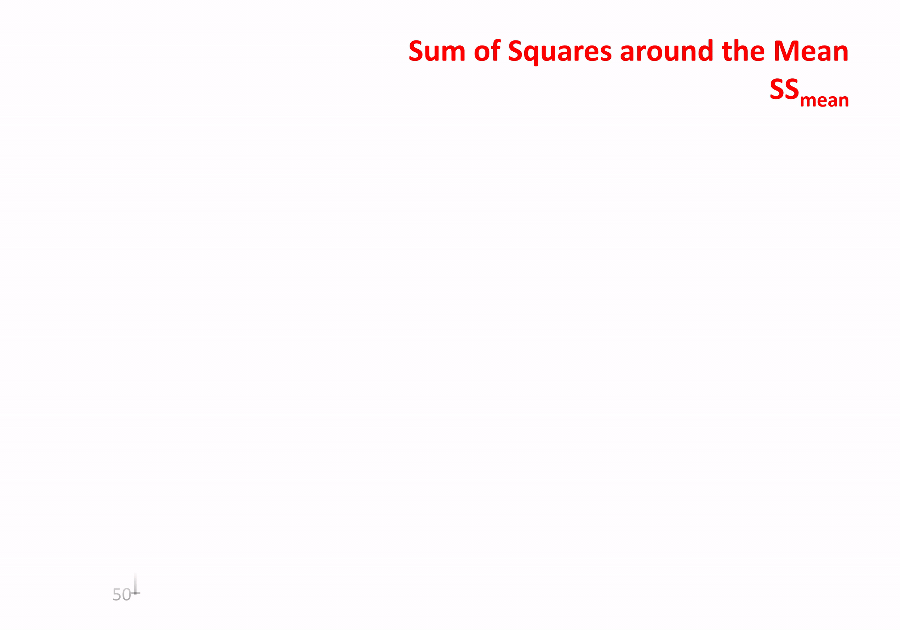
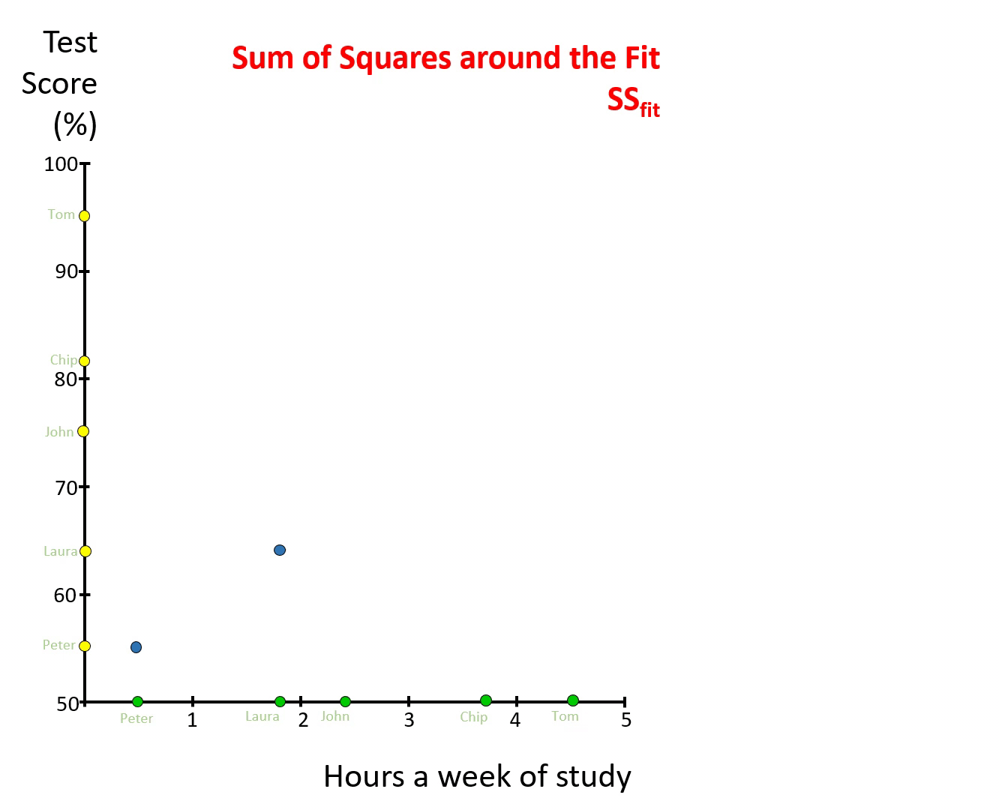
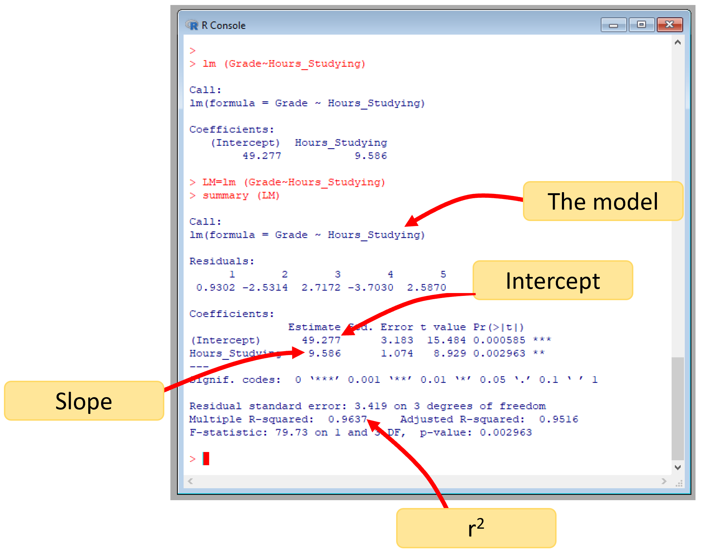

The coeficient of determination
There is one final cool thing about the linear regression model: it allows you to quantify a neat parameter called the coefficient of determination, \(r^2\).
That parameter is useful for two main reasons:
It tells you how good is the relationship between the two variables, although you sort of know this from the correlation coefficient, \(r\), that you estimated earlier.
It tells you the percent of variance of Y that is explained by X.
Say you found a relationship between plant size and nutrient input with an \(r^2\) of 85%. This tells you that 85% of the variability you have among your plants can be explained by the input of nutrients.
In other words, if the relationship was positive, then plants that grew a lot had lots of nutrients, while plants that did not grow well was because they did not have nutrients. So given the high \(r^2\), it will probably be good idea to add nutrients to the plants.
Say that in the opposite you found an \(r^2\) of 5%. Then only 5% of the variability in plant size can be explained by nutrient input. In this case, it may be wasteful to add nutrients to the plants, since they affect so little how plants will grow. This may be the case if you have some good soil, so, no need for nutrients.
In this example about nutrients and plants, you can see how \(r^2\) let you make inferences about the strength of the relationships.
One bad thing about \(r^2\), as oppose to the correlation coefficient, \(r\), is that you cannot know the direction of the relation (i.e., whether it is positive or negative). So you may still have to relay on the correlation coefficient, \(r\), to know in which direction are the two variables related.
Before we get into the mathematics of the \(r^2\), check out this brief explanation:
The coefficient of determination, \(r^2\), is mathematically calculated as:
\[\begin{equation} \text{Coefficient of Determination} = r^2 = \frac{SSmean - SSfit}{SSmean} \end{equation}\]
Let’s break that equation into its pieces to see what is doing.
\(SSmean\), stands for Sum of Squares of the Mean. That is the same term we have used before \(\sum(y - \bar y)^2\). Basically, how far from the mean is each point. If we were to divide that by the number of samples, you will get the variance that we studied earlier.
Just to refresh, you take the mean of all values in Y (horizontal line, in image below), for each point measure the distance to that mean (dotted lines), then you square each value and add them together. If you did not square them, when summing them, the result will be zero.

Figure 7.4: Sum of Squares from the Mean, SSmean
You need to think of the Sum of Squares of the Mean, \(SSmean\), as the variability in Y.
\(SSfit\), stands for Sum of Squares around the Fit. Let’s see what this means.
Take the data on grades and time studying, relate grades against times studying, and find the best line (Orange line in figure below). Then for each point measure the distance from the point to the line, or so-call residuals (red-dotted lines). Take each residual, square it, and then add them together. What you get is the Sum of Squares around the Fit, \(SSfit\).

Figure 7.5: Sum of Squares around the Fit, SSfit
You need to think of the Sum of Squares around the Fit, \(SSfit\), as the variability in Y that was not explained by X.
Remember, the regression line is the mathematical formulation of how Y relates to X, whatever is not accounted for by that line are the residuals, or the variation in Y, that remains to be accounted for.
So, it you look at the formulation for \(r^2\), basically, you are trying to quantify the fraction of variability of Y that was accounted for by the relationship of Y to X. Easy right?
Let’s calculate \(r^2\),
#take the data on grades and time studying
X=c(0.5, 1.8, 2.4, 3.8, 4.5) #hours studying
Y=c(55, 64, 75, 82,95) #grades
# lets estimate the regression line using lm, and lets put that model in a variable
LM = lm (Y~X) #this is the linear model between Grades~Hours_Studying
#you can find out the residuals of that model using the R-Function residuals.
Residuals= residuals (LM) #here we create a vector with the residuals from our model
#Estimate SSfit
SSFit= sum (Residuals^2) # here you are squaring each residual, then adding them
#Lets now estimate SSMean
DeltaY=Y-mean(Y) # here you take each value in Y and subtract it to the mean of Y
SSMean= sum(DeltaY^2) #here you square each score in the line above, sum them together
#we have all we need for the calculation of the R2.
R2=(SSMean-SSFit)/SSMean
R2## [1] 0.9637357So, the \(r^2\) of the relationship between grades and time studying is 0.96. That is the fraction of the variability in grades that is explained by the amount of time students study. You can also report the \(r^2\) as a percentage by multiplying the fraction by 100.
In R, the \(r^2\) is outputted as part of the lm function in combination with the function summary, like this:
The image below indicates the different outputs, we have studied so far:
Figure 7.6: lm outputs